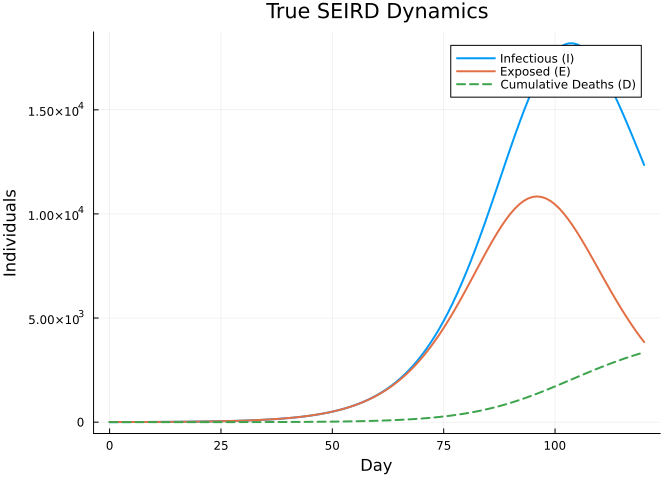
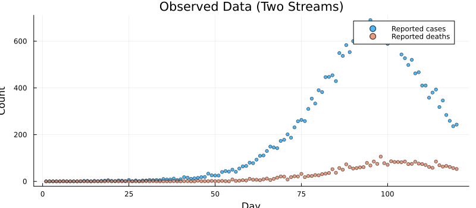
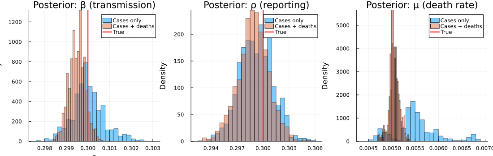
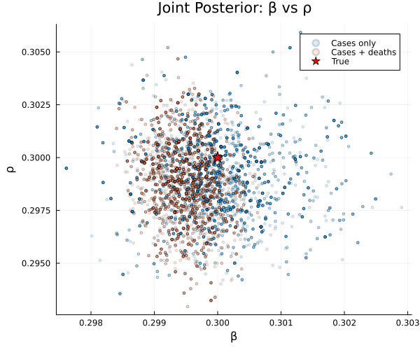
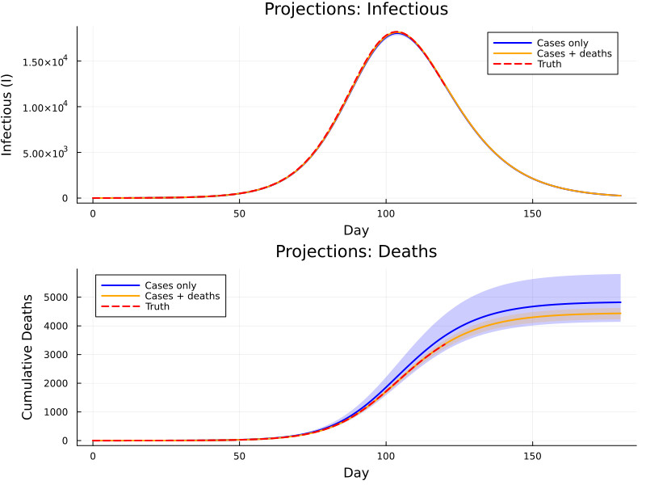

Multi-Stream Outbreak Inference
Introduction
Real-world outbreak surveillance rarely delivers a single, clean data stream. Instead, public health agencies collect multiple overlapping signals — case notifications, death reports, serological surveys, wastewater concentrations — each with its own noise, bias and delay. Fitting to a single stream can leave key parameters poorly identified: for instance, the reporting rate ρ and the transmission rate β may be confounded because only the product ρ × β is constrained by case data.
This vignette demonstrates how to:
- Build a deterministic SEIRD ODE model with two comparison operators
- Generate synthetic case and death data
- Fit the model using only case data (single-stream)
- Fit the model using cases and deaths (multi-stream)
- Compare posteriors to show how additional data streams tighten inference
The approach is inspired by the mpoxseir package, which fits mpox transmission models to multiple surveillance data streams simultaneously.
using Odin
using Distributions
using Plots
using Statistics
using LinearAlgebra: diagm
using RandomModel Definition
SEIRD dynamics
We define a deterministic SEIRD model:
- S → E: susceptible individuals become exposed at rate β S I / N
- E → I: exposed progress to infectious at rate σ (mean latent period 1/σ)
- I → R: infectious individuals recover at rate γ
- I → D: infectious individuals die at rate μ
Only a fraction ρ of new infections are reported as cases, and a (typically higher) fraction ρ_d of deaths are reported.
At each data time point the unfilter evaluates the ODE state and compares the instantaneous flow rates to observed counts via Poisson log-likelihoods. Each ~ statement contributes additively to the total log-likelihood:
\[\ell = \sum_t \bigl[\log p(\text{cases}_t \mid \lambda_c(t)) + \log p(\text{deaths}_t \mid \lambda_d(t))\bigr]\]
Note: Comparing the instantaneous rate against a daily count is a standard approximation that works well when the dynamics are smooth relative to the observation interval.
Multi-stream model (cases + deaths)
seird_multi = @odin begin
deriv(S) = -beta * S * I / N
deriv(E) = beta * S * I / N - sigma * E
deriv(I) = sigma * E - gamma * I - mu * I
deriv(R) = gamma * I
deriv(D) = mu * I
initial(S) = N - E0
initial(E) = E0
initial(I) = 0
initial(R) = 0
initial(D) = 0
# Parameters
N = parameter(100000.0)
E0 = parameter(10.0)
beta = parameter(0.3)
sigma = parameter(0.2) # 5-day mean latent period
gamma = parameter(0.1) # 10-day mean infectious period
mu = parameter(0.005) # death rate from I
rho = parameter(0.3) # case reporting rate
rho_d = parameter(0.9) # death reporting rate
# Two data streams
reported_cases = data()
reported_deaths = data()
reported_cases ~ Poisson(rho * sigma * E + 1e-6)
reported_deaths ~ Poisson(rho_d * mu * I + 1e-6)
endOdin.DustSystemGenerator{var"##OdinModel#277"}(var"##OdinModel#277"(5, [:S, :E, :I, :R, :D], [:N, :E0, :beta, :sigma, :gamma, :mu, :rho, :rho_d], true, false, true, false, false, Dict{Symbol, Array}()))Single-stream model (cases only)
For comparison we define a model with identical dynamics but only one comparison statement. Because the death likelihood is absent, the data cannot directly constrain μ.
seird_cases = @odin begin
deriv(S) = -beta * S * I / N
deriv(E) = beta * S * I / N - sigma * E
deriv(I) = sigma * E - gamma * I - mu * I
deriv(R) = gamma * I
deriv(D) = mu * I
initial(S) = N - E0
initial(E) = E0
initial(I) = 0
initial(R) = 0
initial(D) = 0
N = parameter(100000.0)
E0 = parameter(10.0)
beta = parameter(0.3)
sigma = parameter(0.2)
gamma = parameter(0.1)
mu = parameter(0.005)
rho = parameter(0.3)
# Single data stream
reported_cases = data()
reported_cases ~ Poisson(rho * sigma * E + 1e-6)
endOdin.DustSystemGenerator{var"##OdinModel#278"}(var"##OdinModel#278"(5, [:S, :E, :I, :R, :D], [:N, :E0, :beta, :sigma, :gamma, :mu, :rho], true, false, true, false, false, Dict{Symbol, Array}()))Synthetic Data
True parameters
true_pars = (
N = 100000.0,
E0 = 10.0,
beta = 0.3,
sigma = 0.2,
gamma = 0.1,
mu = 0.005,
rho = 0.3,
rho_d = 0.9,
)
R0 = true_pars.beta / (true_pars.gamma + true_pars.mu)
cfr = true_pars.mu / (true_pars.gamma + true_pars.mu)
println("R₀ = ", round(R0, digits=2))
println("Case fatality ratio = ", round(100 * cfr, digits=1), "%")R₀ = 2.86
Case fatality ratio = 4.8%Simulate the ODE
times = collect(0.0:1.0:120.0)
result = simulate(seird_multi, true_pars; times=times, seed=1)
true_S = result[1, 1, :]
true_E = result[2, 1, :]
true_I = result[3, 1, :]
true_D = result[5, 1, :]121-element Vector{Float64}:
0.0
0.004542595262782869
0.016691138820042205
0.034855779617763094
0.05806752934775733
0.08578220776018268
0.1177505089357978
0.15393205445914826
0.19443908144641295
0.2395000956528348
⋮
2778.6325452287674
2859.000152466352
2937.160665951919
3012.99040866865
3086.3874510692945
3157.272225056838
3225.585893951305
3291.2886434059833
3354.359368734131p_dyn = plot(times, true_I, label="Infectious (I)", lw=2,
xlabel="Day", ylabel="Individuals",
title="True SEIRD Dynamics", legend=:topright)
plot!(p_dyn, times, true_E, label="Exposed (E)", lw=2)
plot!(p_dyn, times, true_D, label="Cumulative Deaths (D)", lw=2, ls=:dash)
p_dyn
Generate observations
At each day we draw reported cases and deaths from the instantaneous flow rates, matching the comparison model.
Random.seed!(42)
obs_times = times[2:end]
E_obs = true_E[2:end]
I_obs = true_I[2:end]
expected_cases = true_pars.rho .* true_pars.sigma .* E_obs
expected_deaths = true_pars.rho_d .* true_pars.mu .* I_obs
obs_cases = [rand(Poisson(max(λ, 1e-10))) for λ in expected_cases]
obs_deaths = [rand(Poisson(max(λ, 1e-10))) for λ in expected_deaths]120-element Vector{Int64}:
0
0
0
0
0
0
0
0
0
0
⋮
62
58
85
69
63
66
62
57
53p_data = plot(xlabel="Day", ylabel="Count",
title="Observed Data (Two Streams)",
size=(800, 350), legend=:topright)
scatter!(p_data, obs_times, obs_cases, ms=3, alpha=0.7, label="Reported cases")
scatter!(p_data, obs_times, obs_deaths, ms=3, alpha=0.7, label="Reported deaths")
p_data
Prepare data objects
The multi-stream data includes both columns; the single-stream data only cases.
data_multi = ObservedData([
(time=Float64(t), reported_cases=Float64(c), reported_deaths=Float64(d))
for (t, c, d) in zip(obs_times, obs_cases, obs_deaths)
])
data_cases = ObservedData([
(time=Float64(t), reported_cases=Float64(c))
for (t, c) in zip(obs_times, obs_cases)
])Odin.FilterData{@NamedTuple{reported_cases::Float64}}([1.0, 2.0, 3.0, 4.0, 5.0, 6.0, 7.0, 8.0, 9.0, 10.0 … 111.0, 112.0, 113.0, 114.0, 115.0, 116.0, 117.0, 118.0, 119.0, 120.0], [(reported_cases = 0.0,), (reported_cases = 0.0,), (reported_cases = 0.0,), (reported_cases = 0.0,), (reported_cases = 0.0,), (reported_cases = 1.0,), (reported_cases = 0.0,), (reported_cases = 0.0,), (reported_cases = 0.0,), (reported_cases = 0.0,) … (reported_cases = 410.0,), (reported_cases = 358.0,), (reported_cases = 380.0,), (reported_cases = 393.0,), (reported_cases = 318.0,), (reported_cases = 346.0,), (reported_cases = 284.0,), (reported_cases = 259.0,), (reported_cases = 236.0,), (reported_cases = 243.0,)])Priors
We fit three parameters — β (transmission rate), ρ (case reporting fraction), and μ (death rate) — keeping all others fixed at their true values.
prior = @prior begin
beta ~ Gamma(3.0, 0.1) # mean 0.3, moderate uncertainty
rho ~ Beta(3.0, 7.0) # mean 0.3
mu ~ Gamma(2.0, 0.0025) # mean 0.005
endMontyModel{var"#16#17", var"#18#19"{var"#16#17"}, var"#20#21", Matrix{Float64}}(["beta", "rho", "mu"], var"#16#17"(), var"#18#19"{var"#16#17"}(var"#16#17"()), var"#20#21"(), [0.0 Inf; 0.0 1.0; 0.0 Inf], Odin.MontyModelProperties(true, true, false, false))We need separate packers because the two models have different parameter sets:
packer_cases = Packer([:beta, :rho, :mu];
fixed=(N=100000.0, E0=10.0, sigma=0.2, gamma=0.1))
packer_multi = Packer([:beta, :rho, :mu];
fixed=(N=100000.0, E0=10.0, sigma=0.2, gamma=0.1, rho_d=0.9))MontyPacker([:beta, :rho, :mu], [:beta, :rho, :mu], Symbol[], Dict{Symbol, Tuple}(), Dict{Symbol, UnitRange{Int64}}(:beta => 1:1, :mu => 3:3, :rho => 2:2), 3, (N = 100000.0, E0 = 10.0, sigma = 0.2, gamma = 0.1, rho_d = 0.9), nothing)Single-Stream Inference (Cases Only)
uf_cases = Likelihood(seird_cases, data_cases; time_start=0.0)
ll_cases = as_model(uf_cases, packer_cases)
posterior_cases = ll_cases + prior
ll_at_truth = ll_cases([true_pars.beta, true_pars.rho, true_pars.mu])
println("Log-likelihood at true parameters (cases only): ",
round(ll_at_truth, digits=2))Log-likelihood at true parameters (cases only): -393.42vcv = diagm([0.001, 0.005, 0.000001])
sampler = adaptive_mh(vcv)
initial = reshape([0.3, 0.3, 0.005], 3, 1)
samples_cases = sample(posterior_cases, sampler, 5000;
initial=initial, n_chains=1, n_burnin=1000, seed=42)Odin.MontySamples([0.2996790312291133 0.2996790312291133 … 0.2984058226521222 0.2984058226521222; 0.296558786489021 0.296558786489021 … 0.29641483560069126 0.29641483560069126; 0.004980133788119273 0.004980133788119273 … 0.00452248357855978 0.00452248357855978;;;], [-386.0755954022559; -386.0755954022559; … ; -386.35980122993385; -386.35980122993385;;], [0.3; 0.3; 0.005;;], ["beta", "rho", "mu"], Dict{Symbol, Any}(:acceptance_rate => [0.2474]))Multi-Stream Inference (Cases + Deaths)
uf_multi = Likelihood(seird_multi, data_multi; time_start=0.0)
ll_multi = as_model(uf_multi, packer_multi)
posterior_multi = ll_multi + prior
ll_at_truth_multi = ll_multi([true_pars.beta, true_pars.rho, true_pars.mu])
println("Log-likelihood at true parameters (multi-stream): ",
round(ll_at_truth_multi, digits=2))Log-likelihood at true parameters (multi-stream): -646.99samples_multi = sample(posterior_multi, sampler, 5000;
initial=initial, n_chains=1, n_burnin=1000, seed=42)Odin.MontySamples([0.29952928297174564 0.29952928297174564 … 0.29915539463959523 0.29915539463959523; 0.2975201003613681 0.2975201003613681 … 0.2967292685227886 0.2967292685227886; 0.00494212283526462 0.00494212283526462 … 0.0047483083270744054 0.0047483083270744054;;;], [-639.7277928699692; -639.7277928699692; … ; -644.4509770061409; -644.4509770061409;;], [0.3; 0.3; 0.005;;], ["beta", "rho", "mu"], Dict{Symbol, Any}(:acceptance_rate => [0.244]))Posterior Comparison
beta_c = samples_cases.pars[1, :, 1]
rho_c = samples_cases.pars[2, :, 1]
mu_c = samples_cases.pars[3, :, 1]
beta_m = samples_multi.pars[1, :, 1]
rho_m = samples_multi.pars[2, :, 1]
mu_m = samples_multi.pars[3, :, 1]4000-element Vector{Float64}:
0.00494212283526462
0.00494212283526462
0.004943446908437733
0.004943446908437733
0.004943446908437733
0.004943446908437733
0.004943446908437733
0.004943446908437733
0.004939753136447237
0.004939753136447237
⋮
0.004748995482436466
0.004748995482436466
0.004748995482436466
0.004748995482436466
0.004748995482436466
0.004748995482436466
0.0047483083270744054
0.0047483083270744054
0.0047483083270744054function summarise(name, vals, truth)
m = round(mean(vals), sigdigits=3)
lo = round(quantile(vals, 0.025), sigdigits=3)
hi = round(quantile(vals, 0.975), sigdigits=3)
w = round(hi - lo, sigdigits=3)
println(" $name: $m [$lo, $hi] (width=$w, true=$truth)")
end
println("Single-stream (cases only):")
summarise("β", beta_c, 0.3)
summarise("ρ", rho_c, 0.3)
summarise("μ", mu_c, 0.005)
println("\nMulti-stream (cases + deaths):")
summarise("β", beta_m, 0.3)
summarise("ρ", rho_m, 0.3)
summarise("μ", mu_m, 0.005)Single-stream (cases only):
β: 0.3 [0.299, 0.302] (width=0.003, true=0.3)
ρ: 0.299 [0.295, 0.303] (width=0.008, true=0.3)
μ: 0.00552 [0.00469, 0.00673] (width=0.00204, true=0.005)
Multi-stream (cases + deaths):
β: 0.299 [0.299, 0.3] (width=0.001, true=0.3)
ρ: 0.299 [0.295, 0.302] (width=0.007, true=0.3)
μ: 0.00505 [0.00481, 0.00527] (width=0.00046, true=0.005)Marginal posterior densities
p1 = histogram(beta_c, bins=40, alpha=0.5, normalize=true, label="Cases only",
xlabel="β", ylabel="Density", title="Posterior: β (transmission)")
histogram!(p1, beta_m, bins=40, alpha=0.5, normalize=true, label="Cases + deaths")
vline!(p1, [0.3], color=:red, lw=2, label="True")
p2 = histogram(rho_c, bins=40, alpha=0.5, normalize=true, label="Cases only",
xlabel="ρ", ylabel="Density", title="Posterior: ρ (reporting)")
histogram!(p2, rho_m, bins=40, alpha=0.5, normalize=true, label="Cases + deaths")
vline!(p2, [0.3], color=:red, lw=2, label="True")
p3 = histogram(mu_c, bins=40, alpha=0.5, normalize=true, label="Cases only",
xlabel="μ", ylabel="Density", title="Posterior: μ (death rate)")
histogram!(p3, mu_m, bins=40, alpha=0.5, normalize=true, label="Cases + deaths")
vline!(p3, [0.005], color=:red, lw=2, label="True")
plot(p1, p2, p3, layout=(1, 3), size=(1100, 350))
The death data is particularly informative for μ and ρ:
- μ (death rate): With cases only, μ is weakly identified because deaths are not directly observed. Adding the death stream pins μ down.
- ρ (reporting rate): Case counts constrain the product ρ × β but not ρ individually. Deaths provide an independent signal about the absolute infection level, breaking this confounding.
- β (transmission rate): Also tightens because ρ and β are less correlated once both streams contribute.
Joint β–ρ posterior
p_joint = scatter(beta_c, rho_c, alpha=0.15, ms=2, label="Cases only",
xlabel="β", ylabel="ρ",
title="Joint Posterior: β vs ρ",
size=(600, 500))
scatter!(p_joint, beta_m, rho_m, alpha=0.15, ms=2, label="Cases + deaths")
scatter!(p_joint, [0.3], [0.3], ms=8, color=:red, marker=:star5, label="True")
p_joint
The single-stream posterior shows a strong negative correlation between β and ρ — higher transmission with lower reporting can produce the same case count. The multi-stream posterior is tighter and better centred because the death data breaks this degeneracy.
Forecasting from the Posterior
We project the epidemic forward using posterior draws from each fit, propagating parameter uncertainty into forecasts.
proj_times = collect(0.0:1.0:180.0)
n_proj = 200
n_t = length(proj_times)
function project(samples, n_proj, seed)
Random.seed!(seed)
n_total = size(samples.pars, 2)
idx = rand(1:n_total, n_proj)
I_traj = zeros(n_proj, n_t)
D_traj = zeros(n_proj, n_t)
for j in 1:n_proj
pars = (
N = 100000.0, E0 = 10.0, sigma = 0.2,
gamma = 0.1, rho_d = 0.9,
beta = samples.pars[1, idx[j], 1],
rho = samples.pars[2, idx[j], 1],
mu = samples.pars[3, idx[j], 1],
)
r = simulate(seird_multi, pars; times=proj_times, seed=j)
I_traj[j, :] = r[3, 1, :]
D_traj[j, :] = r[5, 1, :]
end
return (I=I_traj, D=D_traj)
end
proj_single = project(samples_cases, n_proj, 10)
proj_multi = project(samples_multi, n_proj, 10)(I = [0.0 1.7350240142908795 … 279.80994471351556 260.5197268830239; 0.0 1.7349751131398403 … 274.5667390597252 255.606900453154; … ; 0.0 1.7347474531815783 … 272.6288971529986 253.78608348977366; 0.0 1.7349038486963708 … 276.889742235222 257.78107941006414], D = [0.0 0.004470513258371335 … 4340.085998629188 4341.414804876905; 0.0 0.004554652474442917 … 4419.477490395545 4420.805886264411; … ; 0.0 0.004810915355031232 … 4654.414627073775 4655.807937944144; 0.0 0.004617064851487403 … 4475.594828505705 4476.952885963334])function ribbon_plot!(p, t, traj; color, label)
med = [median(traj[:, k]) for k in 1:size(traj, 2)]
lo = [quantile(traj[:, k], 0.025) for k in 1:size(traj, 2)]
hi = [quantile(traj[:, k], 0.975) for k in 1:size(traj, 2)]
plot!(p, t, med, ribbon=(med .- lo, hi .- med),
fillalpha=0.2, lw=2, color=color, label=label)
end
p_fI = plot(xlabel="Day", ylabel="Infectious (I)",
title="Projections: Infectious", legend=:topright)
ribbon_plot!(p_fI, proj_times, proj_single.I, color=:blue, label="Cases only")
ribbon_plot!(p_fI, proj_times, proj_multi.I, color=:orange, label="Cases + deaths")
plot!(p_fI, times, true_I, color=:red, lw=2, ls=:dash, label="Truth")
p_fD = plot(xlabel="Day", ylabel="Cumulative Deaths",
title="Projections: Deaths", legend=:topleft)
ribbon_plot!(p_fD, proj_times, proj_single.D, color=:blue, label="Cases only")
ribbon_plot!(p_fD, proj_times, proj_multi.D, color=:orange, label="Cases + deaths")
plot!(p_fD, times, true_D, color=:red, lw=2, ls=:dash, label="Truth")
plot(p_fI, p_fD, layout=(2, 1), size=(800, 600))
Projections from the multi-stream fit (orange) have narrower credible intervals and track the true trajectory more closely, especially for cumulative deaths. The single-stream fit (blue) shows wider uncertainty because the death rate μ is poorly constrained by case data alone.
Summary
| Aspect | Single-stream | Multi-stream |
|---|---|---|
| Data used | Cases only | Cases + deaths |
~ operators | 1 | 2 |
| μ identifiability | Weak — prior-driven | Strong — data-driven |
| ρ–β confounding | Yes | Reduced |
| Projection uncertainty | Wide | Narrow |
Key takeaways
- Each
~statement adds a log-likelihood term. Multiple comparison operators let the model learn from every available data stream. - Different streams constrain different parameters. Case data pins down the product ρ × β; death data independently constrains μ.
- Multi-stream fitting reduces posterior uncertainty and gives more reliable forecasts — critical for real-time outbreak response.
- The workflow is the same regardless of the number of streams: declare
data()variables, write~comparisons, and pass a data object containing all columns.
| Step | API |
|---|---|
| Define model | @odin begin … end with ~ for each data stream |
| Prepare data | ObservedData([(time=…, col1=…, col2=…), …]) |
| Likelihood | Likelihood() → as_model() |
| Prior | @prior begin … end |
| Posterior | likelihood + prior |
| Sample | sample(posterior, sampler, n; …) |